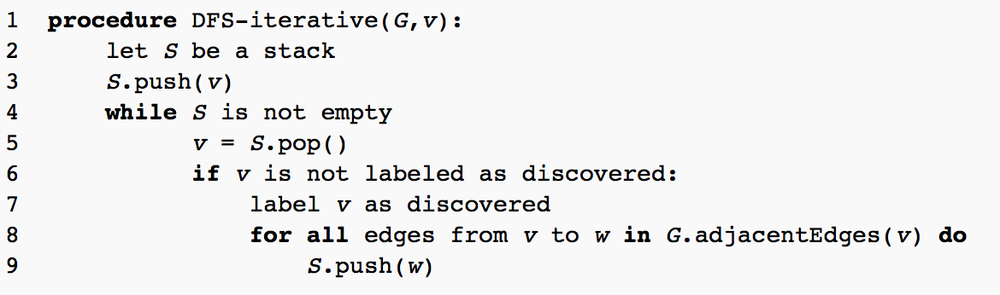

Info
Depth-first search (DFS) is an algorithm for traversing or searching tree or graph data structures. One starts at the root (selecting some arbitrary node as the root in the case of a graph) and explores as far as possible along each branch before backtracking.A version of depth-first search was investigated in the 19th century by French mathematician Charles Pierre Trémaux as a strategy for solving mazes.
Order, in which the graph is processed:

Properties
The time and space analysis of DFS differs according to its application area. In theoretical computer science, DFS is typically used to traverse an entire graph, and takes time Θ(|V| + |E|), linear in the size of the graph. In these applications it also uses space O(|V|) in the worst case to store the stack of vertices on the current search path as well as the set of already-visited vertices. Thus, in this setting, the time and space bounds are the same as for breadth-first search and the choice of which of these two algorithms to use depends less on their complexity and more on the different properties of the vertex orderings the two algorithms produce.Pseudocode
A non-recursive implementation of DFS:[1]